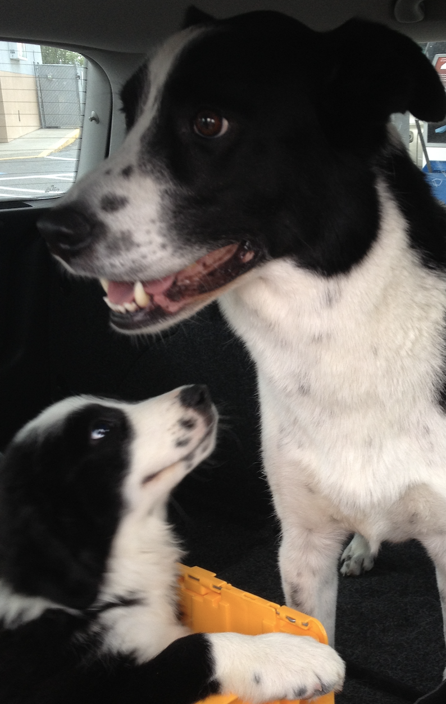

About Me
 Bronson enjoys writing code
Bronson enjoys writing code
Tom Sawyer's Fence - The difference between Leadership and Manipulation
Ask yourself how you would consider the following example of showing leadership from the book “The Adventures of Tom Sawyer and Huckleberry Finn”.
In the book, Tom Sawyer is required to paint a fence as punishment for getting his best, most expensive "church clothes" dirty. He doesn’t want to do the work. Before long his friends start to happen by and watch, and Tom engages them in conversation. Tom starts describing the work he is doing to them as actually not painfully dull and tiring, but instead extremely fulfilling and rewarding.
Within a few minutes, he not only has his friends talked into believing that painting the fence is actually fun, but they are all paying him in toys for the privilege of taking over his painting job! By the end of the scene, all his friends are doing his work for him, while he watches in smug satisfaction.
Is this leadership?
For many, the answer is clear: NO! He used dishonesty to manipulate people who thought they were his friends, to do work that was HIS punishment, and now Tom will get the credit for getting it done .
Others would say “What’s the big deal? Yes, this is leadership.”
• Tom accomplished his specific task, didn’t he?
• The work got done more quickly than Tom working alone, didn’t it?
• His friends enjoyed the work so much they paid Tom to get to do it, didn’t they?
The clear answer however, is that this is an example of Manipulation over Leadership. Sociopaths manipulate, not leaders.

Tire Fire
Once upon a time in Allegoryville there was a gigantic tire fire just outside of town. It was dozens of square miles in size and was growing exponentially. Unfortunately, the citizens of Allegoryville had long ago made the fateful decision to construct their entire town out of recycled tire materials, which increased the risk of the fire destroying the town were it to spread unchecked.
The town council hired 200 tire firefighters to put the blaze out. To lead the crew the council hired a person who was not a tire firefighter, but was a renowned motivational speaker. His name was El Presidente.
Before too long El Presidente had all 200 tire firefighters battling the blaze, and they had it 50% contained. Unfortunately, the progress in extinguishing it had gone very slowly. The town council wanted answers: “Why wasn’t the fire put out already?”
Soon after this question was put to him, El Presidente stood in the field next to the fire observing the work, and felt great pride in his crew. They really were doing a great job. The best they could under the circumstances, actually. So, from time to time he would show his appreciation by clapping his hands, cheering motivational slogans, and stomping his feet. He was by training, after all, an inspirational leader. The crew really seemed to like this. Everyone loves appreciation!
After a week of El Presidente periodically cheering on his troops, he came to work one day to find a man named Joker had jumped off the fire line, threw aside his pick and shovel, and was cheering his heart out for the crew. El Presidente asked him why he was doing this, and Joker said “Look how the crew is responding! I saw the great benefit of what you did and decided that I could help out in this way; which would free up your time to do some more strategic thinking.” El Presidente liked that idea, and made Joker a lieutenant in the crew. Joker’s job was to inspire the men and women, primarily by cheering them on.
The next week El Presidente went to work and found 4 more people had thrown aside their fire fighting gear and were cheering alongside Joker. El Presidente asked why, and Joker said: “Something as important as cheering on the crew can’t be a single point of failure. Look at the benefits we are having on the fire already! (He motioned toward the fire, but it looked the same.) We need backups for weekend coverage and in case I call in sick! Isn’t that right guys?” (All of the 4 other new cheering members huzzahhed! in agreement!) El Presidente couldn’t fault the logic, so he promoted Joker to captain, and the other 4 to Lieutenant. They called the new leadership team the “Rah-Rah Crew”.
After a couple more weeks, El Presidente had started to feel pretty good about his delegation, and didn’t come to the work site as often. One day he came to the site, and the Rah-Rah Crew (RRC) was 25 people strong. This seemed odd, so El Presidente asked Joker why the RRC had grown so large. Joker told El Presidente that the battle against the fire had gone so well under the leadership of the RRC that the bold next step was to continue to build that leadership team. “After all,” Joker reasoned, “you can’t argue with these successful results.” Joker then presented El Presidente a glorious bound report with many charts and graphs that showed how great the fire fight was going.
But, El Presidente looked up at the actual tire fire, and didn’t really see it going that great. In fact, the fire might have even crept closer to town. He asked Joker why the numbers looked so good, but casually observing the fire didn’t seem to back that up? Joker and the rest of the RRC quickly moved to block El Presidente’s sight of the fire and said “Don’t get all down in the weeds, Great Leader, that is our job. Look at this report we created that proves how well we are doing! You can give this report directly to the town council, and they will finally get off your back about progress.”
El Presidente was not completely convinced, but his leadership team certainly hadn’t failed yet, so why not continue on with what his leadership was telling him was working? And, this bound report was indeed just perfect to shut the town council up.
After a few more weeks, the spread of the fire line had grown, and there were now only 150 people to fight the fire. There were now a full 50 members of the Rah Rah Club, who would spend the day in shifts chanting, clapping, and stomping their feet. There was a change in strategy however. Instead of the cheering and clapping directed toward the fire fighters, they had formed a circle and were inwardly chanting and clapping to each other. This was done because it made it easier for them to coordinate the ever more complex nature of the cheering that they had choreographed.
Unfortunately though, they had gotten quite loud, and the fire line crew had taken to using a system of shouted commands to move personnel around to make diving saves in areas where the fire line had been abandoned by a person newly promoted to the RRC. Their tactical commands were getting shouted down by the chants from the RRC. After a particularly scary incident where an RRC member facing away from the fire accidentally was singed by a flame mid-clap, Joker made the decision to hold their leadership meetings away from the fire, downtown in the city where it was closer to where their homes were.
At the new RRC headquarters, the leadership team invited El Presidente to a strategy session. They explained to El Presidente that having their cheering sessions in their new team conference room was far more efficient and strategic than having it next to the tire fire, where the flames were often distracting to their complex choreography. The flames and shouted fire crew commands were also distracting to their efforts in creating the now glorious and impressive weekly status reports, which really wowed the town council when El Presidente would present them.
The Rah Rah Club prospered, and was extremely proud of their success! They were now 100 members strong and the morale of the team was through the roof! Backslapping and handshaking occurred every day after another successful clapping and cheering session in the RRC conference room.
Then one fateful day arrived when a newly promoted RRC member held up his hands during a Rah Rah session for silence. He said: “Wait, stop for a second, please! The fire is at the city limits now, and people are getting hurt! Whatever you have been doing here in your downtown conference room, the fire fighters are not aware of it! All they know is that they started with 200 people fighting the fire, and now there are only 95. Whatever you think you are doing here isn’t working! The town is in danger, we need all of us to grab our fire fighting gear and get back to actually fighting the fire again!”
While the new member was speaking, Joker had walked up behind him, and had pulled out a claw hammer. Just as the new member was ending his speech, Joker struck him in the back of the head and killed him. As the new member was falling to the ground Joker said: “The data doesn’t support what he is saying, but I have pulled 5 fire fighters off of the fire line to do a deep dive into the situation and return with an analysis in a month. Now, where were we in our cheer?”